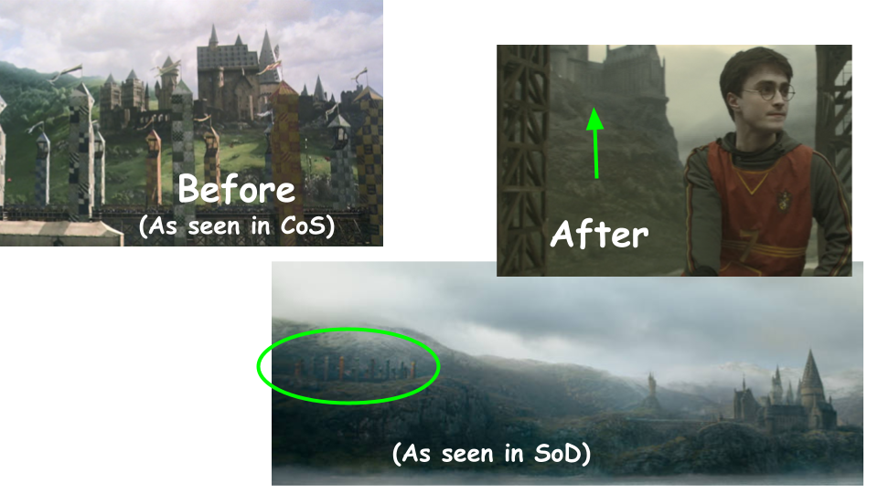

Half-Blood Prince
Harry Potter and the Half-Blood Prince contains mostly trivial changes, except for the notable fact that the Astronomy Tower was added.
This is the first movie with the Astronomy Tower. It replaces the Dark Tower and the Defense Against the Dark Arts Tower. Interestingly, if you view the Astronomy Tower from behind, it seems to resemble the now removed DADA Tower.
The Astronomy Tower is described in the books as the tallest tower at Hogwarts. Because suddenly adding the new tower would be a much too obvious change, views of the Astronomy Tower were limited to close-ups, or the castle would viewed from a distance while being in a dark environment. However, clear views of this new tower were limited, likely due to the filmmakers trying to hide the new tower, as seen in the images below. I brightened some of them to point out the tower.

There is one scene in the movie that shows the Astronomy Tower incorrectly. The small turret on the front is placed on the right side instead of the left, and the tower is turned 90 degrees to the right. However, it is possible the tower was altered this way specifically for this scene.
Smaller changes can be seen throughout the movie in addition to the Astronomy Tower. For instance, the Training Grounds Tower was redesigned to resemble Central Tower and the Bell Towers, likely because the original tower was more fantasy-like.
Next, the Lookout Tower was also made steeper, and the turret attached to it became much taller and was moved to the front of the tower.
To the left of the Lookout Tower, a small tower, circled in blue, was removed, and even smaller towers, circled in red, were placed on the roof of the front side of the Quad.
Inside the castle, the shape of the Potions Classroom was changed. Last seen all the way back in Philosopher's Stone, it now has a plus shape and resembles Snape's office as seen in previous movies.
Back outside, the Quidditch Pitch has moved. Different angles of the castle can be seen of the castle between this movie and the rest. Its movement can be seen easier in Secrets of Dumbledore, where the whole Quidditch Pitch can be seen behind the castle.
Finally, continuing with the Quidditch Pitch, staggered seats replaced the orginal place spectators watched Quidditch games; students originally had to stand to watch the game.